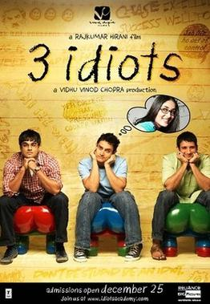

Learn about some interesting Indian Movies!
-
3 Idiots
"3 Idiots" is a 2009 Indian comedy-drama film directed by Rajkumar Hirani, which follows the lives of three engineering students—Rancho, Farhan, and Raju—at a prestigious college. The film critiques the rigid and pressure-filled education system in India, focusing on the societal expectations that often force students to follow conventional paths rather than pursue their passions. The story alternates between the past and present, as the characters reunite years later to search for their missing friend, Rancho, who had always questioned the traditional approach to education. The major cast includes Aamir Khan as Rancho, R. Madhavan as Farhan, Sharman Joshi as Raju, Kareena Kapoor as Pia, and Boman Irani as the strict college director Viru Sahastrabuddhe. "3 Idiots" became a massive box office success, grossing over ₹392 crore worldwide, and received critical acclaim for its entertaining narrative, powerful performances, and its social commentary on the flaws of the education system. It inspired a generation to follow their true passions, and its famous catchphrase, "All is well," became a symbol of optimism, making the film a cultural phenomenon that left a lasting impact on both Indian cinema and society.
Fun Fact! The movie's script was based on the novel "Five Point Someone" by Chetan Bhagat, though the plot was adapted for a more universal appeal.
Find more information and its rating here! -
Taare Zameen Par

Taare Zameen Par (2007), directed by Aamir Khan, is a heartwarming drama that explores the struggles of a young boy named Ishaan Awasthi, who suffers from dyslexia but is misunderstood by his family and teachers as being lazy or unruly. The film focuses on Ishaan's journey of self-discovery and acceptance, highlighting the challenges children with learning disabilities face in a system that often values conformity over creativity. His life takes a positive turn when an art teacher, played by Aamir Khan, recognizes his unique potential and helps him overcome his academic struggles by fostering his artistic abilities. "Taare Zameen Par" sensitively portrays themes of childhood, education, and the importance of nurturing individual talents. The film was critically acclaimed for its powerful storytelling, performances, and its impactful message about the importance of understanding and supporting children with learning challenges. It resonated deeply with audiences, sparking conversations about reforming the education system to be more inclusive and empathetic.
Fun Fact! Aamir Khan, who both directed and acted in the film, worked closely with a team of experts to portray dyslexia accurately, raising awareness about learning disabilities in India.
Find more information and its rating here! -
Zindagi Na Milegi Dobara
Zindagi Na Milegi Dobara (2011), directed by Zoya Akhtar, is a coming-of-age drama about three childhood friends—Arjun, Kabir, and Imran—who embark on a road trip across Spain as part of Kabir's bachelor party. Each friend is dealing with their own personal struggles: Arjun, a workaholic businessman, Kabir, about to get married, and Imran, a poet in search of his biological father. The journey becomes a transformative experience for them, as they confront their fears, face unresolved issues, and learn the importance of living in the moment. he film explores themes of friendship, love, self-discovery, and the significance of following one's dreams. With stunning visuals of Spain, a memorable soundtrack, and brilliant performances from Hrithik Roshan, Farhan Akhtar, and Abhay Deol, Zindagi Na Milegi Dobara encourages audiences to embrace life with all its uncertainties and to cherish every moment. The film was highly praised for its uplifting message, relatable characters, and beautiful portrayal of life's unpredictability, making it a significant hit and an inspiration for those seeking to find balance and happiness in their own lives.
Fun Fact! The stunning skydiving scene was performed by Hrithik Roshan himself, who completed the dive without a stunt double, making it one of the film's most authentic and thrilling moments.
Find more information and its rating here!